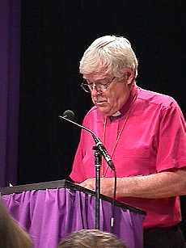

|
Heed minority voices, Anglican primate tells governing body MONTREAL (May 22) -- Archbishop Michael Peers, Primate of Canada, has urged more than 300 members of the church’s chief governing body to give greater heed to minority voices in society, including Canada’s francophone population, members of indigenous communities and those marginalized because of gender, sexuality or age. In an opening address to the church’s General Synod meeting here for nine days, Archbishop Peers, spiritual head of Canada’s 750,000 Anglicans, also called on church members to address issues such as the impact of globalization and multinational trade agreements, international and third-world debt, and the widening gulf between the world’s rich and poor. Drawing of the Biblical vision of the "Jubilee" year, in which debts were to be forgiven and wealth redistributed, Archbishop Peers said he hoped the idea of debt cancellation for some of the world’s poorest nations could be explored to mark the millenium. General Synod meets every three years, drawing members from across each of the country’s 30 Anglican dioceses, to discuss issues relating to church and society. In his address, Archbishop Peers also spoke of the on-going conversations with the Evangelical Lutheran Church in Canada and expressed the hope that deliberations here would lead to acceptance of full-communion between the two churches by the next time synod meets in the year 2001. ("Full communion" is not a merger of the two churches, but means that they recognize each other’s rites, services and clerical orders.) "Lutherans and Anglicans have come to a point in which there is a friendship that holds the promise of genuine partnership," Archbishop Peers told synod members. Archbishop Peers linked the theme of General Synod -- "Lift every voice -- Faisons entendre nos voix" -- to a theme of "connectedness." He noted that it has been 39 years since General Synod last met in Montreal. "The voice least heard in our midst is that of Quebec and francophone Canada," he said. "I suggest that for many in this assembly, the discipline of listening with care to that voice will be among our most serious challenges." He also referred to matters such as social and justice issues and the cancellation of third-world debt, issues that are also likely to occupy more than 800 Anglican bishops from around the world when they meet in England at the Lambeth Conference later this summer.. In all their deliberations and debates in the next nine days, Archbishop Peers told members to avoid becoming as "those whose world is so far removed from the realities of most citizens of this planet that they cannot see or do not care about what happens to those whose lives they affect." Among other tasks facing General Synod members, Archbishop Peers noted, is evaluating progress made since the last gathering in Ottawa in 1995, where the church decided to shift priorities at the national level away from domestic work in favor of developing and nurturing overseas partnerships Members are also expected to address: * Issues relating to euthanasia and assisted suicide; * Issues related to cloning and reproductive technologies; * The place of indigenous peoples in the Anglicafn Church of Canada; * How Anglicans effectively relate to each other in an increasingly complex and diverse society; * Issues relating to human rights and * Church legislation dealing with the authority of bishops over priests. Members will also meet in a number of forums addressing topics such as the church’s relationships with overseas partners, relations with other faiths and denominations, social justice issues and relations between the 30 dioceses and the national church. The Anglican Church of Canada is the country’s third largest Christian denomination. -30- Contact: Cell phones: |